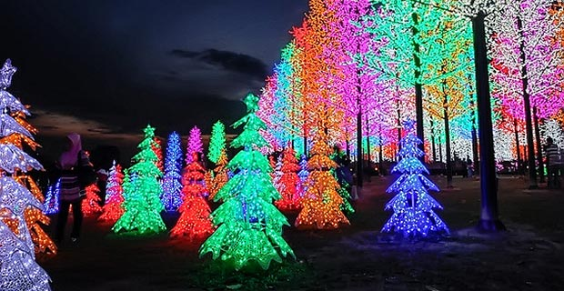

About Selangor
Selangor is one of the most developed states in Malaysia, surrounding the capital city of Kuala Lumpur. Known for its bustling cities, vibrant culture, and modern amenities, Selangor offers a blend of urban and natural attractions.
Selangor is one of the most developed states in Malaysia, surrounding the capital city of Kuala Lumpur. Known for its bustling cities, vibrant culture, and modern amenities, Selangor offers a blend of urban and natural attractions.
The Sultan Salahuddin Abdul Aziz Mosque, also known as the Blue Mosque, is the largest mosque in Malaysia and one of the largest in Southeast Asia. It features stunning architecture and a beautiful blue and silver dome.

I-City is a theme park located in Shah Alam, Selangor, known for its digital lights, snow walk, and various other attractions like the water park and Ferris wheel.
Sunway Lagoon is a popular amusement park that offers a variety of attractions, including water slides, a wave pool, an amusement park, and a wildlife park.

Selangor is a melting pot of cultures, with influences from Malay, Chinese, Indian, and various indigenous groups. Visitors can explore diverse neighborhoods, enjoy traditional festivals, and taste a wide variety of local cuisines.